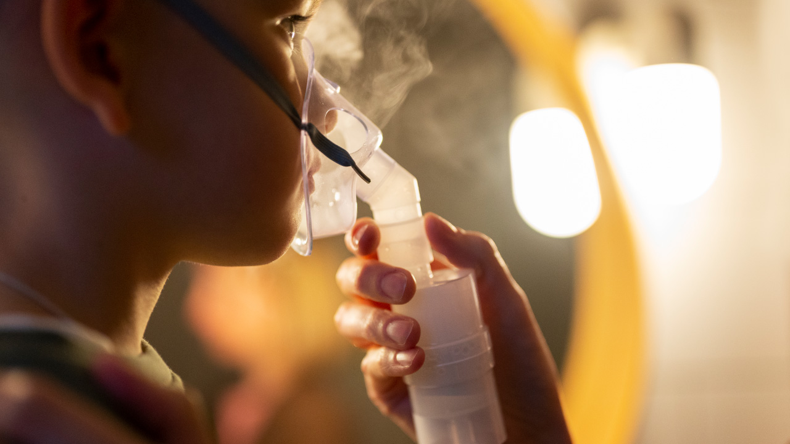
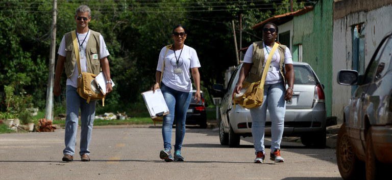

Atuação da APS diante de queimadas e incêndios florestais nas etapas da GRDE em Saúde
Seja bem-vindo(a) à terceira e última aula do módulo V.
Nesta etapa, queimadas e incêndios florestais serão o foco de estudo, considerando inclusive que os impactos desses eventos podem afetar regiões distantes do ocorrido. Você vai conhecer medidas e estratégias que devem ser adotadas para prevenção e cuidado sobre a saúde humana no âmbito da APS, em todas as etapas da Gestão de Riscos de Desastres e Emergências (GRDE) em saúde.
Ao final desta aula, você estará apto(a) para
- Identificar os grupos vulneráveis e os riscos específicos nos territórios da APS; e
- Implementar ações de cuidado e prevenção de agravos relacionados à exposição à fumaça e aos poluentes.
Nas aulas anteriores aprendemos sobre queimadas, incêndios florestais e sua relação com as mudanças climáticas, bem como os impactos desses eventos na saúde humana. Agora vamos refletir sobre o papel da Atenção Primária à Saúde nas etapas da GRDE em Saúde e o que podemos fazer para garantir a implementação de cuidados e medidas preventivas para agravos relacionados à exposição à fumaça e aos poluentes.
Como a APS pode proteger a população quando a fumaça das queimadas ameaça a saúde de comunidades inteiras?
Queimadas, incêndios florestais e impactos na saúde
A poluição do ar associada às condições climáticas afeta a saúde, podendo ocasionar aumento e agravamento de diversas doenças como hipertensão, infarto agudo do miocárdio, asma, infecções respiratórias agudas e doenças obstrutivas pulmonares.
A exposição à fumaça e aos poluentes decorrentes de queimadas e incêndios florestais afeta a população como um todo. Porém, crianças, pessoas idosas, gestantes, pessoas com doenças cardiovasculares e respiratórias crônicas são ainda mais vulneráveis nesse cenário, bem como populações tradicionais – indígenas, quilombolas, ribeirinhas –, além das equipes de bombeiros e brigadistas. Esse contingente de pessoas afetadas pode resultar em maior busca por atendimento na APS e hospitalizações.

Falamos, até aqui, da importância da Atenção Primária à Saúde como coordenadora do cuidado, ordenadora do acesso e lugar estratégico, ocupado pelas equipes da ESF por estarem inseridas dentro dos territórios. Aprendemos como o ACS e o ACE têm importância não apenas na comunicação com a população e as equipes, mas também na identificação de riscos e de grupos em risco, de acordo com cada tipo de evento.
A seguir, daremos destaque a algumas particularidades no contexto da APS.
Atenção Primária à Saúde no enfrentamento de queimadas e incêndios florestais
Nos incêndios florestais e queimadas, o trabalho das equipes de saúde pode ser mais complexo em regiões onde esses eventos não ocorrem, mas a população é afetada pelos gases poluentes dispersos por meio de correntes de ar. Por isso, o monitoramento deve acontecer por meio de ferramentas e com o estabelecimento de uma boa comunicação entre gestão, vigilância em saúde, órgãos de monitoramento e os profissionais da APS.
Já nos locais onde há uma série histórica de registros de incêndios florestais e queimadas, pela atividade produtiva exercida ou pelas características geográficas, temos dois pontos importantes que merecem destaque:
Garantir a comunicação com as equipes para levantamento de grupos mais vulneráveis, assentamentos, comunidades tradicionais, crianças, idosos, gestantes e pessoas com problemas crônicos, imunológicos ou respiratórios.
Incentivar formas de produção que dispensem queimadas no tratamento do solo exige trabalho intersetorial e articulação entre órgãos municipais e estaduais, como as Secretarias de Trabalho e Renda, Assistência Social, Agricultura, Infraestrutura e Meio Ambiente.
Os incêndios florestais e as queimadas representam importantes desafios que exigem atuação articulada e contínua da APS, da gestão local e das equipes da ESF. Diante do aumento da frequência e da intensidade desses eventos, agravados pelas mudanças climáticas, torna-se fundamental organizar ações em todas as etapas da GRDE em saúde, ou seja, na prevenção, preparação, resposta e recuperação, com foco na proteção da população, especialmente dos grupos mais vulneráveis.
pan_tool_alt Clique Toque nos títulos a seguir.
Trabalho das equipes da APS e da gestão local:
- Identificar períodos em que os eventos sejam mais recorrentes;
- Monitorar, junto com a vigilância municipal, qualidade do ar, umidade relativa do ar e temperatura;
- Preparar as equipes para a identificação de sinais de alerta no território;
- Preparar a rede de atenção para acolher a população em momentos de crise (profissionais preparados, fluxos de atendimento estabelecidos, provisão de insumos, medicamentos, identificação de laboratórios para exames);
- Prever estratégias de educação e comunicação;
- Orientar a população sobre a procura de atendimento e a Rede de Atenção à Saúde estabelecida nos casos de eventos envolvendo incêndios florestais e queimadas;
- Realizar simulações e treinamentos que preparem as equipes de saúde para momentos de crise, como estratégia importante para que os desfechos, em situações como essa, sejam de resiliência e continuidade de cuidado.
Orientação para a gestão da APS:
- Monitorar, junto com a vigilância municipal, qualidade do ar, umidade relativa do ar e temperatura;
- Programar a abertura das Unidades Básicas de Saúde (UBS) em horário ampliado e aos finais de semana, de acordo com o perfil epidemiológico do território;
- Disponibilizar estrutura adequada, insumos e profissionais em quantidade suficiente para o atendimento da demanda de rotina e para suprir o aumento de busca pelos serviços em razão de síndromes respiratórias;
- Na previsão de insumos, revisar disponibilidade de vacinas, medicamentos para o tratamento de doenças respiratórias (antibióticos, antialérgicos, broncodilatadores, entre outros) e de exames laboratoriais e de imagem, que podem ser necessários com o aumento da demanda;
- Criar e divulgar fluxos bem estabelecidos com os pontos da rede que atendem situações de urgência e emergência, para que haja contrarreferência dos usuários;
- Pactuar a comunicação da rede especializada com a APS com relação às altas hospitalares, a fim de viabilizar a continuidade do cuidado no território. Ao usuário egresso de internação, além da contrarreferência, pode ser ofertado documento que o identifique para a APS, priorizando-o no acolhimento, caso haja necessidade de reavaliação pós-internação;
- Disponibilizar amplamente nos estabelecimentos de saúde orientações de medidas preventivas, bem como disponibilizar máscaras faciais aos imunocomprometidos e pessoas que apresentam sintomas respiratórios, para proteção contra exposição à fumaça decorrente de queimadas.
- Avaliar o novo cenário de risco, a saúde da população afetada e dos grupos vulneráveis;
- Garantir o acompanhamento do cuidado dos usuários atendidos durante a ocorrência de incêndios florestais e queimadas;
- Realizar adaptações a partir de avaliações dos processos de trabalho e de acordo com as lições aprendidas;
- Solicitar apoio das demais esferas da saúde para adaptação de pontos que tenham gerado desafios no atendimento das demandas em momentos de crise.
Na etapa da Resposta da GRDE em saúde, alguns insumos são essenciais na APS em momentos de crise. São eles:
- Água potável para trabalhadores(as) e pessoas usuárias nas UBS;
- Sais de reidratação oral;
- Máscaras cirúrgicas para pessoas usuárias imunocomprometidas ou que apresentem sintomas respiratórios;
- Álcool em gel 70% nos ambientes de trânsito de pessoas usuárias e trabalhadores(as) nas unidades de saúde;
- Espaçadores para crianças menores de 12 anos;
- Exames laboratoriais e de imagem conforme necessidade;
- Medicações, em especial aquelas voltadas para tratamento de agravos respiratórios;
- Se possível, primeiras doses do antibiótico, ainda na UBS, quando houver indicação;
- Vacinas;
- Outros que forem necessários, dependendo de cada cenário.
Com relação às ações de educação em saúde, deve-se levar em consideração os seguintes pontos:
Em virtude dos impactos negativos das queimadas na qualidade do ar, é fundamental que a população geral adote medidas preventivas rigorosas. Recomenda-se evitar atividades físicas em áreas abertas e manter portas e janelas fechadas para minimizar a exposição aos poluentes.
Além disso, é essencial manter uma distância segura dos focos de incêndio e aumentar significativamente a ingestão de água, o que ajuda a manter as vias respiratórias úmidas e o organismo hidratado.
Pessoas com comorbidades, crianças, gestantes e idosos são mais vulneráveis aos efeitos da poluição e do calor extremo, necessitando de cuidados redobrados e da manutenção rigorosa de suas consultas médicas.
No caso específico dos idosos, a atenção deve ser ainda maior: devido ao comprometimento natural do equilíbrio hídrico corporal, eles sentem menos sede e possuem maior risco de desidratação. Por isso, é vital monitorar sinais de desidratação, pois o quadro pode evoluir para desorientação, confusão mental e aumento do risco de quedas.
O uso de máscaras deve ser avaliado individualmente, sendo especialmente indicado para pessoas com condições crônicas (pneumopatas, cardiopatas e indivíduos com problemas imunológicos), pois elas auxiliam na redução da exposição a partículas maiores.
Para populações expostas ou próximas às fontes de emissão, máscaras cirúrgicas podem ser utilizadas para diminuir o desconforto das vias aéreas superiores. Contudo, para a redução eficaz da inalação de partículas finas por toda a população, os modelos de respiradores (como N95, PFF2 ou P100) são os mais adequados.
A população deve estar atenta a qualquer manifestação respiratória ou de síndromes gripais, procurando se informar sobre os pontos de atendimento disponíveis na rede local. Caso surjam sintomas como náuseas, vômitos, febre, falta de ar, tontura, confusão mental ou dores intensas na cabeça, no peito ou no abdômen, é indispensável buscar atendimento médico imediato. Além do cuidado físico, é importante estar atento às manifestações relacionadas à saúde mental durante esse período desafiador.
Deve-se ter cautela com o fenômeno conhecido como "chuva preta". Esse evento ocorre quando o material particulado da fumaça interage com o vapor de água na atmosfera, alterando as propriedades das nuvens e resultando em uma precipitação de coloração escura. Como essa água pode conter contaminantes nocivos à saúde humana, ela deve ser considerada imprópria para consumo.
Profissionais e equipes de saúde devem avaliar a necessidade de ampliação do horário de atendimento das Unidades Básicas de Saúde, a sua extensão ou o funcionamento aos fins de semana, de acordo com a demanda do território. Também é importante disponibilizar canais de comunicação, como telefone para orientação dos usuários, além de implementar estratégias de telemonitoramento e tele busca ativa como complemento às ações presenciais.
Os profissionais devem orientar, especialmente por meio de telemonitoramento e busca ativa, pessoas com problemas cardíacos, respiratórios e imunológicos, reforçando a importância de manter medicamentos e itens prescritos disponíveis para situações de crises agudas. Quando necessário, devem ser realizadas visitas e atendimentos domiciliares, em articulação com os Agentes Comunitários de Saúde, priorizando os grupos mais vulneráveis.
Além disso, é fundamental identificar a população prioritária para ações de prevenção e promoção da saúde no contexto do aumento de doenças respiratórias relacionadas à exposição à fumaça das queimadas. O monitoramento deve ter atenção especial a:
- Crianças menores de 5 anos;
- Pessoas idosas acima de 65 anos;
- Gestantes;
- Pessoas com doenças cardíacas, respiratórias ou imunológicas;
- Comunidades tradicionais, como populações indígenas, quilombolas, ribeirinhas, migrantes e pessoas em situação de rua;
- Ambientes coletivos e fechados, como unidades de acolhimento, abrigos, albergues, dormitórios coletivos e Instituições de Longa Permanência para Idosos (ILPI), especialmente os que atendem crianças, gestantes e pessoas idosas.
As equipes de saúde devem ainda desenvolver ações de educação em saúde junto à comunidade, abordando doenças respiratórias e medidas de proteção contra a fumaça das queimadas. No âmbito do Programa Saúde na Escola (PSE), recomenda-se a realização de ações preventivas e orientações destinadas a professores e estudantes.
É de suma importância manter estratégias de Educação Permanente voltadas aos profissionais das equipes de saúde, fortalecendo a preparação para atuação em emergências relacionadas às queimadas e aos incêndios florestais.
Recomenda-se que os Agentes Comunitários de Saúde (ACS) realizem busca ativa de pessoas com sintomas sugestivos de doenças respiratórias crônicas que ainda não tenham sido avaliadas pela equipe de saúde. Também é preciso fortalecer a integração entre a equipe de saúde e a população adscrita à unidade, mantendo os profissionais informados sobre a evolução dos casos acompanhados no território.

Os ACS devem manter contato permanente com as famílias, desenvolvendo ações educativas relacionadas ao controle da asma e da rinite, de acordo com o planejamento estabelecido pela equipe. Além disso, é fundamental identificar sinais de gravidade em pacientes já acompanhados e proceder conforme os fluxos e rotinas definidos pela equipe de saúde.
Recomenda-se ainda reforçar as ações voltadas à atenção à saúde mental da população, especialmente em contextos de exposição prolongada à fumaça e aos impactos das queimadas e incêndios florestais, além de orientar as famílias e gestantes em relação a:
- Evitar brincadeiras ao ar livre;
- Esperar a melhoria na qualidade do ar para levar a criança em áreas abertas;
- Atenção especial às pessoas idosas para ingestão de água e líquidos;
- Manter atenção redobrada às gestantes, principalmente com relação a sinais de alteração respiratória.
Veja quadro a seguir, que sintetiza como a APS é essencial na vigilância dos riscos, na proteção dos grupos vulneráveis, na educação em saúde, na coordenação do cuidado e na articulação intersetorial necessária para reduzir os impactos da fumaça e dos poluentes sobre a saúde da população de seu território.
| Quadro-síntese – Atuação da APS diante de queimadas e incêndios florestais. | |
|---|---|
| Aspecto / Evento | Queimadas e incêndios florestais |
| Sinais de alerta para atuação no território | Aumento de focos de calor e incêndios na região; piora da qualidade do ar; baixa umidade relativa do ar; presença intensa de fumaça; aumento de atendimentos por sintomas respiratórios; maior procura por serviços de saúde por crianças, idosos e pessoas com doenças crônicas; ocorrência de "chuva preta"; agravamento de condições cardiovasculares e respiratórias. |
| Ações prioritárias da APS | Monitorar qualidade do ar, temperatura e umidade; identificar e acompanhar grupos vulneráveis; fortalecer ações de educação em saúde; orientar sobre hidratação, proteção respiratória e redução da exposição à fumaça; realizar busca ativa e telemonitoramento; organizar fluxos assistenciais e referência para urgências; garantir disponibilidade de medicamentos, vacinas, máscaras, espaçadores e demais insumos; ampliar horários de atendimento quando necessário; monitorar a saúde mental da população afetada. |
| Principais grupos e condições de risco | Crianças menores de 5 anos, idosos, gestantes, pessoas com doenças respiratórias, cardiovasculares ou imunológicas, povos indígenas, quilombolas, ribeirinhos, migrantes, população em situação de rua, brigadistas, bombeiros e trabalhadores expostos à fumaça. Ambientes coletivos fechados, como abrigos e Instituições de Longa Permanência para Idosos (ILPI), demandam atenção especial. |
| Articulação territorial e comunicação | Integrar ações com Vigilância em Saúde, órgãos de monitoramento ambiental, Defesa Civil, Corpo de Bombeiros, secretarias de Meio Ambiente, Agricultura, Assistência Social e Educação; divulgar alertas e orientações à população; articular-se com o Programa Saúde na Escola (PSE); estabelecer canais de comunicação com usuários e comunidades; desenvolver estratégias de educação permanente para profissionais de saúde. |
| Objetivo da atuação da APS | Reduzir a exposição da população aos poluentes atmosféricos, prevenir agravamentos e internações por doenças respiratórias e cardiovasculares, proteger os grupos mais vulneráveis, garantir a continuidade do cuidado e fortalecer a capacidade de resposta dos territórios diante dos impactos das queimadas e dos incêndios florestais. |
Como podemos observar, em eventos como queimadas e incêndios ambientais, não somente no local onde ocorrem, mas também a quilômetros de distância, o trabalho da APS é essencial para que o direito à saúde seja garantido. Temos um futuro incerto, mas certamente poderemos estar cada dia mais preparados quanto à prevenção, preparação, mitigação, resposta, recuperação e adaptação a novos cenários, enquanto nos mantivermos em formação contínua, atentos(as) aos desafios de nossa geração.
As mudanças climáticas são uma realidade, mas juntos poderemos construir uma rede de atenção e cuidado à saúde com medidas prospectivas para um sistema mais resiliente e resolutivo.